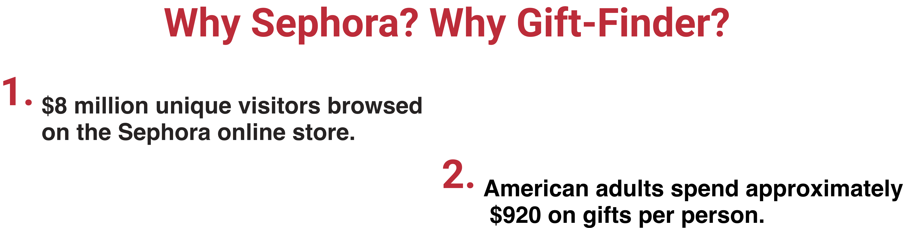
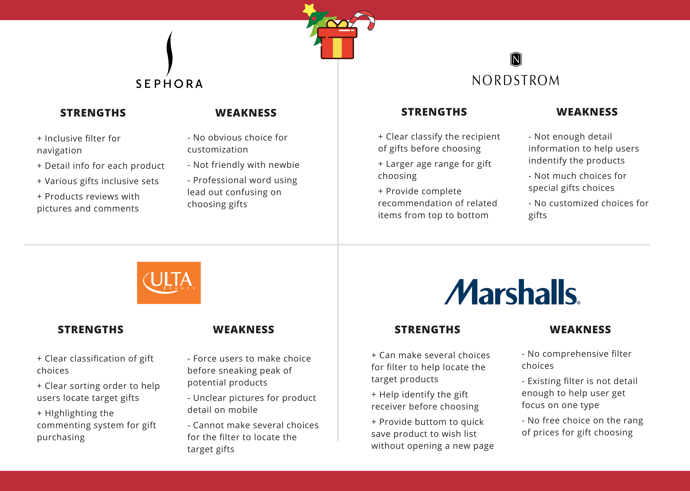
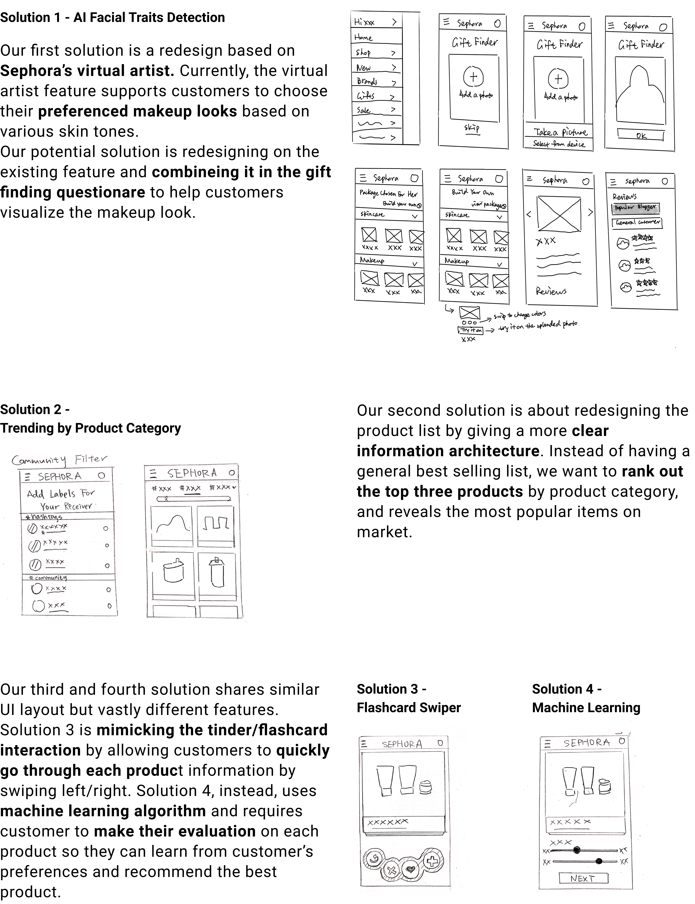

Background
Recalling the past experiences, all of our team members reflected on the same situation that it was always easy to pick cosmetics for ourselves but much harder to choose appropriate and pleasant makeup gift for others. Then our team decide to explore on Sephora mobile app, specifically gift selection feature.
Research
To figure out what essential problems that is prevalenting gift selection, we conducted 4 user interviews regarding individual’s past beauty products purchase experiences before conducting direct observations.

Problem Statement
" Sephora mobile app’s gift finder currently lacks but needs a better navigation feature to help cosmetic newbies locating and making the most satisfying gift choice for friends and families during holiday season. "
Competitive
Analysis
All about our potential competitors
Ideation
What we came up with
Prototype
Two solutions for iteration

Iteration
We did another round of testing...
After creating two high-fidelity
interactive prototypes, we did another round of usability testing with
4 different users. We asked them to perform the same task on two different
user flows, and asked them in which solution they enjoyed the most. 100% of
the users pointed out these two usability issues, and we iterated our design on top of these reflections.

Our Next Steps...
We carefully considered our users’ insights and their frustrations during our first round of user testings. From four potential solutions,
we refiend and narrowed down our scope to and finalized on two approaches that carefully address all the user pain points that cosmetics
newbies tend to encounter while picking a gift online.
After analyzing on users’ compliments and critics during second round of user testing, instead of choosing one user flow over the other,
we decided to merge these two prototypes together to provide an end-to-end solution for better user expereinces. Utilizing the concepts of
AI image detections and big data market information, we would like to offer our potential customers with a less time-consuming,
visually-appealing, user interactive gift-finding process.